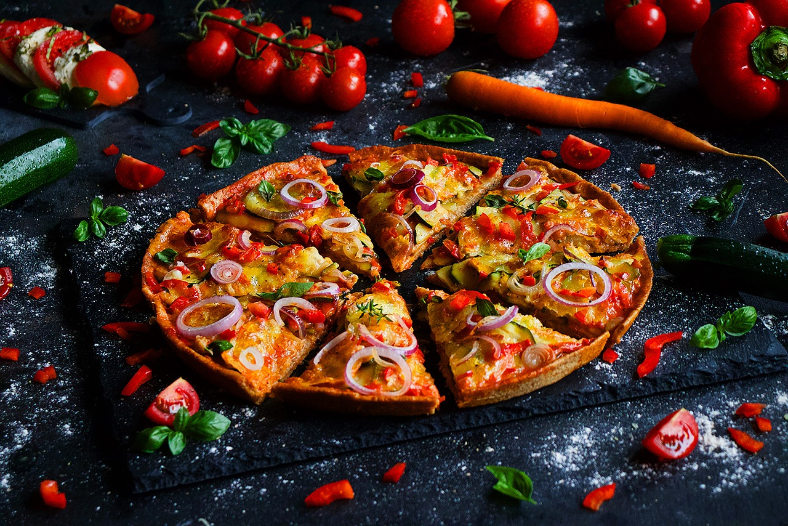

mozzarella is commonly used on pizza, with the buffalo mozzarella produced in the surroundings of Naples.[51] Other cheeses are also used, particularly burrata, Gorgonzola, provolone, pecorino romano, ricotta, and scamorza. Less expensive processed cheeses or cheese analogues have been developed for mass-market pizzas to produce desirable qualities such as browning, melting, stretchiness, consistent fat and moisture content, and stable shelf life. This quest to create the ideal and economical pizza cheese has involved many studies and experiments analyzing the impact of vegetable oil, manufacturing and culture processes, denatured whey proteins, and other changes in manufacture. In 1997, it was estimated that annual production of pizza cheese was 1 million metric tons (1,100,000 short tons) in the US and 100,000 metric tons (110,000 short tons) in Europe.